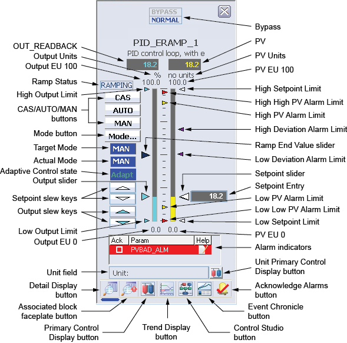

Loop Ramp faceplate (LOOP_RAMP_FP)

- OUT_READBACK – The OUT_READBACK value of the loop module. The background color of this field changes from gray to orange if the output status becomes uncertain, or to red if the output status becomes bad. In the absence of a configured IO_READBACK DST, the OUT_READBACK value shown is equal to the implied output value of the loop. The displayed decimal format of OUT_READBACK is determined by the OUT_SCALE.DECPT parameter field.
If the target mode of the loop is MAN, clicking the OUT_READBACK field opens a dialog that prompts the operator for an output value. The valid range for input is defined by the EU 0 and EU 100 values of the OUT_SCALE parameter. Valid input ranges from –10% to 110% of OUT_SCALE.
- Output Units – The engineering units description used for the output as defined in the OUT_SCALE parameter.
- Output EU 100 – 100% of scale for the output.
- Ramp Status – The current state of the ramp, if it is RAMPING or PAUSED.
- High Output Limit – The High Output Limit relative to the OUT_READBACK value. This value can be modified by using the detail display for the module. It cannot be modified by moving the pointer with the mouse.
- CAS/AUTO/MAN buttons – The CAS, AUTO, or MAN buttons can be used to set the target mode of the loop module. If a target mode is not allowed for the PID block, its corresponding button does not appear.
- Mode button – Clicking the Mode button opens the Mode Selector dialog, containing a list of available target modes. To set the target mode, select an allowed modes from the list. To close the Mode Selector dialog, click the Close button.
- Target Mode – The target mode for the loop. The background color of this field changes to blue when the target mode and normal mode differ.
- Actual Mode – The current actual mode of the loop. The background color of this field changes to blue when the current actual mode and normal mode differ.
- Adaptive Control state – Indicates that an Adapt license has been assigned to the block and that the Actual Adapt mode is not set to OFF or that the Target Adapt mode is not set to OFF. The background color of this field changes to blue when the current actual mode and target mode differ.
- Output slider – The Output slider pointer appears only if the current actual mode of the loop is Manual. A new output value can be set by moving the pointer with the mouse. The new value is then written to the output parameter of the loop.
- Setpoint slew keys – Clicking the Setpoint slew keys increments or decrements the setpoint value by 1 PV engineering unit if PV_SCALE.F_DECPT is less than or equal to 1. If PV_SCALE.F_DECPT is greater than or equal to 2, each click changes the setpoint by 0.1 engineering unit. The Setpoint slew keys appear only when the loop target mode is AUTO, MAN, or OOS.
- Output slew keys – Clicking the Output slew keys increments or decrements the output value by 1 output engineering unit. The Output slew keys appear only when the loop target mode is MAN or OOS.
- Low Output Limit – The Low Output Limit relative to the OUT_READBACK value. This value can be modified by using the detail display for the module. It cannot be modified by moving the pointer with the mouse.
- Output EU 0 – 100% of scale for the output.
- Bypass – The Bypass field appears if the Bypass Enable option is set in CONTROL_OPTS (typically when the PID block is a slave in a cascade pair). Clicking Bypass puts the PID block in Bypass mode, making the output value equal to the percent of setpoint value, which allows the target loop to drive the output if the transmitter is unavailable. Clicking Normal turns off Bypass mode.
- PV – The PV value of the loop module in the decimal format provided by PV_SCALE.DECPT. The background color of this field changes from gray to orange if the PV status becomes uncertain, or to red if the PV status becomes bad. The background blinks red if the PV Bad alarm is unacknowledged. If an unacknowledged PV Bad alarm is no longer active, the background blinks from black to gray.
- PV Units – The engineering units description used for the PV as defined in the PV_SCALE parameter.
- PV EU 100 – 100% of scale for the PV.
- High Setpoint Limit – The High Setpoint Limit relative to the PV value. This value can be modified by using the detail display for the module. It cannot be modified by moving the pointer with the mouse.
- High High PV Alarm Limit – The High High Alarm Limit for the PV, if the alarm is enabled. This value can be modified by using the detail display for the module. It cannot be modified by moving the pointer with the mouse.
- High PV Alarm Limit – The High Alarm Limit for the PV, if the alarm is enabled. This value can be modified by using the detail display for the module. It cannot be modified by moving the pointer with the mouse.
- High Deviation Alarm Limit – The High SP-PV Deviation Limit relative to the Setpoint slider, if the alarm is enabled. This value can be modified by using the detail display for the module. It cannot be modified by moving the pointer with the mouse. When the Deviation Limit value is changed from the detail display or Control Studio Online, the faceplate must be reopened to reposition the pointer.
- Ramp End Value slider – The Ramp End Value slider pointer appears to the right of the PV bar graph if the ERAMP_IN_MODE parameter is currently set to AUTO or RCAS. If the ERAMP_IN_MODE parameter is currently set to LO, MAN, or ROUT, it appears to the left of the output bar graph. You can move the pointer on the output bar graph to change the output parameter value for the loop.
- Low Deviation Alarm Limit – The Low SP-PV Deviation Limit relative to the Setpoint slider, if the alarm is enabled. This value can be modified by using the detail display for the module. It cannot be modified by moving the pointer with the mouse. When the Deviation Limit value is changed from the detail display or Control Studio Online, the faceplate must be reopened to reposition the pointer.
- Setpoint slider – The Setpoint slider pointer appears only if the target mode is AUTO, MAN, or OOS. A new setpoint value can be set by moving the pointer with the mouse. The new value is then written to the SP parameter of the loop.
The Working Setpoint pointer, a transparent pointer (not displayed in the figure) with the same movement range as the Setpoint slider pointer, indicates the Working Setpoint (SP_WRK) of the loop, the current actual SP value used by the controller to calculate output moves. The movement range of the Working Setpoint pointer is restricted within the High Setpoint Limit and Low Setpoint Limit. When SP and SP_WRK have the same value, SP_WRK is superimposed upon SP; therefore, it is not distinguishable from SP. The Working Setpoint pointer appears only when setpoint ramping prevents SP_WRK from going to SP immediately.
- Setpoint Entry – The setpoint value of the loop module in the decimal format provided by PV_SCALE.DECPT. The background color of this field changes from gray to orange if the PV status becomes uncertain, or to red if the PV status becomes bad. If the target mode of the loop is AUTO, MAN, or OOS, clicking the Setpoint Entry field opens a dialog that prompts the operator for a setpoint value. The valid range for input is defined by the EU 0 and EU 100 values of the PV_SCALE parameter. Valid input ranges from 0% to 100% of PV_SCALE.
- Low PV Alarm Limit – The Low Alarm Limit for the PV, if the alarm is enabled. This value can be modified by using the detail display for the module. It cannot be modified by moving the pointer with the mouse.
- Low Low PV Alarm Limit – The Low Low Alarm Limit for the PV, if the alarm is enabled. This value can be modified by using the detail display for the module. It cannot be modified by moving the pointer with the mouse.
- Low Setpoint Limit – The Low Setpoint Limit relative to the PV value. This value can be modified by using the detail display for the module. It cannot be modified by moving the pointer with the mouse.
- PV EU 0 – 0% of scale for the PV.
- Alarm indicators – A scrollable list of the current alarms that functions like the first two columns of an alarm summary. The first column shows the state of the alarm represented graphically, as follows:
- Blank – Active/unacked
- Check mark – Active/acked
- Empty box – Inactive/unacked
The second column contains the alarm or parameter name, where the text and color is as configured for the alarm’s current state.
- Unit field – The unit name.
- Unit Primary Control Display button – Clicking the Unit Primary Control Display button opens the primary control display for the unit.
- Toolbar – The Toolbar contains the following buttons:
- Detail Display button – Clicking the Detail Display button opens the detail display for the ramp.
- Associated block faceplate button – Clicking the Associated block faceplate button opens the faceplate for the target function block associated with the ramp.
- Primary Control Display button – Clicking the Primary Control Display button opens the primary control display.
- Trend Display button – Clicking the Trend Display button opens the current trend display for the ramp.
- Control Studio button – Clicking the Control Studio button opens Control Studio.
- Event Chronicle button – Clicking the Event Chronicle button opens the Process History Viewer.
- Acknowledge Alarms button – Clicking the Acknowledge Alarms button acknowledges all alarms.
Module Error indicator – If a module error occurs, a flashing bar appears below the Detail Display button. By opening the detail display for the module, the error can be viewed and cleared.